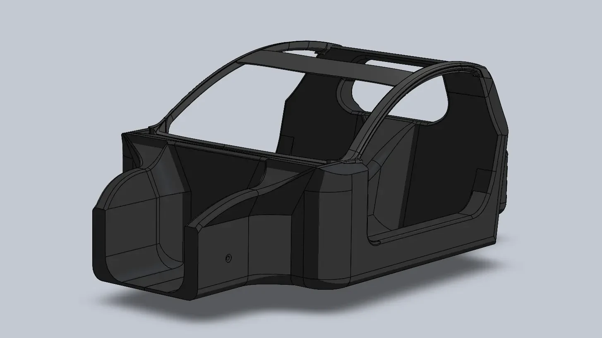

TUecomotive
2022
student team
student team
Summary
TUecomotive is a student team focussed on creating sustainable solutions in the area of
mobility. My role in the team in the seventh team of TUecomotive was a design engineering role
as well as an industrial design role. A big task I had in the team was to design the monocoque
chassis along with the mechanical team.
Roles
• CAD modeling
• Large scale 3d printing preparation
• Ideation
• exploritive sketching
• client meetings
• Large scale 3d printing preparation
• Ideation
• exploritive sketching
• client meetings
Student team
Being part of a student team was a completely different experience than the other projects I was
used to at industrial design. Being part of the design team inside a multidisciplinary team learned
me a lot about the reality of projects and working inside a big project team. Especially when you
have strict deadlines and a very bgi
challenge.

Design engineering role
designing the monocoque chassis for TUecomotive along with the mechanical team showed me a side of
an
engineering project I would normally be not involved in as designer. Having to design with
constraints in terms
of material properties in combination with structural strength and taking loads into account was
part of my
interdisciplinary development at ecomotive. Not only did it teach me hard skills like advanced CAD
modeling but
also a lot of experience in terms of cooperation within interdisciplinary teams.

This is just a sidequest you had to hide text as easter eggs which looks like a line